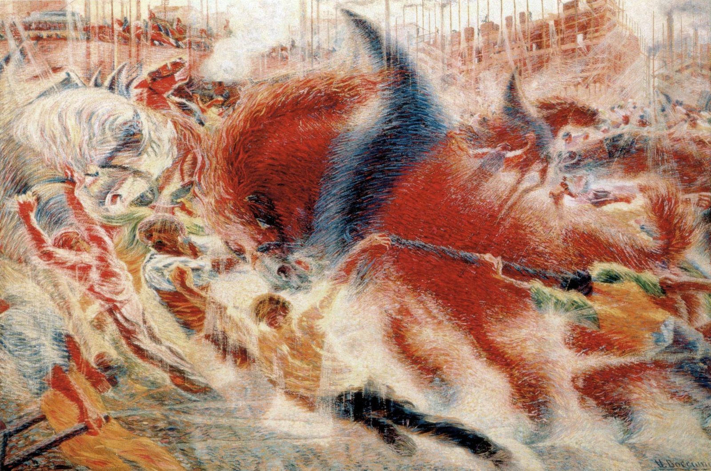

References / Painting / 554
The City Rises
Umberto Boccioni’s first fully Futurist painting: a red horse and its handlers surge diagonally across a suburban building site, dissolved into streaks of divided color.
- Source
- Wikimedia Commons: The City Rises by Umberto Boccioni 1910.jpg
- Creator
- Umberto Boccioni
- Made
- 1910
- Style
- Italian Futurism (agent-proposed, not yet reviewed by a person)
- Moods
- Fast, mechanical, exuberant
- Evidence
- Downloaded and inspected the Commons file (2583 × 1715 px, stored at 1600 × 1062 px). The Commons credit is moma.org. The physical work is the painting in the Museum of Modern Art, New York, accession number 507.1951 according to Wikipedia. The MoMA collection page refused scripted access (HTTP 403), so the accession number is not checked against MoMA.
- Reviewed
- Rights
- Open license, stored. License: public domain. Rights policy

Context
Oil on canvas, 199 × 301 cm, 1910. It was first shown at the Mostra d’arte libera in Milan in 1911 under the title Il lavoro (Work). The composer Ferruccio Busoni bought it in 1912 during the travelling Futurist exhibition. It is now in the Museum of Modern Art, New York. Wikipedia: The City Rises.
Wikipedia describes it as Boccioni’s first true Futurist work, with “men and horses, merged in a dynamic effort” in a suburb where buildings are under construction. Wikipedia.
Observed
- A huge red horse with a blue-black collar fills the center and plunges from upper left toward lower right.
- Small figures lean hard against the horse on ropes; their bodies are drawn as long streaks in the direction of the pull.
- The paint is laid in long separate strokes of red, orange, blue, green, and white, so that every surface appears to vibrate.
- At the top, scaffolding, red brick buildings, chimneys, and a tram stand in an upright band of thin vertical lines.
- There is no single light source and almost no still area: diagonals and arcs run across the whole canvas.
- The signature “U. Boccioni” is at lower right.
Why it belongs
The painting is still divisionist in technique, but its subject and composition are Futurist: the force of work and the expanding industrial city are shown as one motion. It shows the style before the Cubist planes of 1912.
The horse is not a machine, but it plays the role of one: a symbol of energy that the figures must strain to control.
Borrow
Point every stroke, line, and shape along one dominant diagonal so the whole surface reads as a single motion.
Set a calm vertical band (here the scaffolding) against the diagonal mass to make the motion read stronger.
Use a warm red as the dominant field with cool blue accents at the points of greatest force.
Measured
Machine-extracted by tools/image-traits.py on . Full measurement.
- Mean chroma
- 0.23
- Palette
- #c3ad98 7%
- #dcc3aa 7%
- #9c3121 5%
- #e2d1bb 5%
- #c39071 4%
- #ca9f81 4%
- #d6b89c 4%
- #7e2b1e 4%

